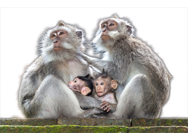

La reproducción en los seres vivos
Los seres vivos permanecen en la Tierra gracias a su capacidad de reproducirse. Reconoce las diferentes formas que utilizan los organismos para crean otros semejantes a ellos.Guía del profesor
Recursos
00 - La reproducción en la naturaleza
Interactivo que permite conocer la importancia de la reproducción y las estrategias reproductivas básicas.

01 - Las estrategias reproductivas
Actividad para identificar las estrategias reproductivas básicas que hay en la naturaleza

02 - Refuerza tu aprendizaje: La importancia de la reproducción
Actividad que ayuda a reconocer la importancia de la reproducción
03 - Refuerza tu aprendizaje: La reproducción y las estrategias reproductivas
Preguntas de respuesta libre sobre diversos aspectos de la reproducción.

04 - Los tipos de reproducción en la naturaleza
Interactivo que enseña sobre la reproducción sexual y asexual, y las variantes que tienen.

05 - La reproducción asexual en los seres vivos
Actividad para identificar las características de los diferentes tipos de reproducción asexual.

06 - La reproducción sexual de los seres vivos
Actividad para identificar las características de los diferentes tipos de reproducción sexual.

07 - La ventajas y desventajas de los tipos de reproducción
Actividad de reconocimiento de las ventajas y desventajas de la reproducción sexual y la asexual.

08 - Refuerza tu aprendizaje: Los tipos de reproducción en la naturaleza
Actividad acerca de los tipos de reproducción en la naturaleza

09 - La reproducción de los microorganismos
Interactivo que expone los tipos de reproducción de los microorganismos

10 - ¿Cómo se reproducen los microorganismos?
Actividad de identificación de los tipos de reproducción de bacterias, arqueas y protozoos.

11 - Refuerza tu aprendizaje: La reproducción de los microorganismos
Actividad acerca de la reproducción de microorganismos

12 - La reproducción de los hongos
Interactivo que permite conocer la reproducción de los hongos
13 - La reproducción del hongo Philobolus
Animación que trata sobre el proceso de dispersión del hongo Philobolus

14 - Los tipos de reproducción de los hongos
Actividad de reconocimiento de los tipos de reproducción de los hongos.

15 - Refuerza tu aprendizaje: La reproducción de los hongos
Actividad acerca de la reproducción de los hongos

16 - La reproducción de las plantas
Interactivo que explica los diferentes tipos de reproducción de las plantas
17 - La alternancia de generaciones
Interactivo que repasa el ciclo biológico de la planta, la alternancia de generaciones y las fases reproductivas

18 - Identifica las partes de una flor
Actividad que permite identificar las partes de una flor
19 - La reproducción de las plantas con flor
Animación que muestra la reproducción sexual en las plantas con semilla

20 - La reproducción vegetativa
Actividad de asociación de diferentes formas de reproducción asexual de plantas con su definición

21 - ¿Cómo se reproducen las plantas?
Actividad de identificación de conceptos relacionados con los tipos de reproducción de las plantas.

22 - Refuerza tu aprendizaje: La reproducción de las plantas
Actividad acerca de la reproducción de las plantas
23 - La reproducción de los animales
Interactivo que muestra los diferentes tipos de reproducción animal
24 - Los tipos de reproducción de los animales
Actividad de asociación de imágenes de animales con su tipo de reproducción

25 - ¿Qué sabes sobre la reproducción de los animales?
Actividad de responder preguntas sobre la reproducción de los animales

26 - Refuerza tu aprendizaje: La reproducción de los animales
Actividad para reconocer los tipos de reproducción de los animales

27 - Competencias: relaciona los tipos de reproducción con organismos en los que se lleva a cabo
Actividad que propone relacionar los diferentes tipos de reproducción que existen con los organismos que la realizan

28 - Competencias: analiza el crecimiento bacteriano
Actividad que propone analizar e interpretar la información relativa al crecimiento bacteriano

29 - Banco de actividades: La reproducción de los seres vivos
Motor que incluye preguntas de respuesta abierta del tema La reproducción de los seres vivos

30 - Evaluación
Evalúa tus conocimientos acerca de la reproducción de los seres vivos.